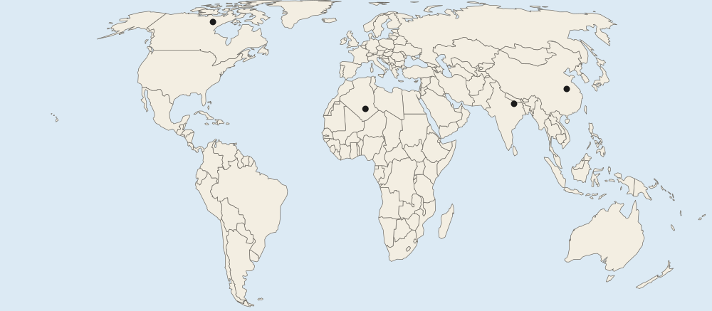

Unit 2 · 12 to 17% of the exam
Unit 2 practice test: Population and Migration Patterns and Processes
twelve questions, every option explained
12 exam-style questions from the unit, free, with an explanation for every option. Each has four answer choices (the real exam and the practice exams have five), and sets share one map, table, chart, image or passage. None of them is in the two practice exams. Covers: Population Distribution; Consequences of Population Distribution; Population Composition; Population Dynamics; The Demographic Transition Model; Malthusian Theory; Population Policies; Women and Demographic Change; Aging Populations; Causes of Migration; Forced and Voluntary Migration; Effects of Migration.

Text
A notice from the health office of an invented province
Invented for practice. Notice from the Northern Hills Health Office, Country A, March 2026:
Our province has about 6 people per square kilometer. Villages are far apart, and some families now drive two hours to the nearest hospital. Two small clinics will close this year because each served fewer than 300 patients. A mobile clinic will visit each valley once a month. Meanwhile, the Capital Region, with over 1,000 people per square kilometer, is building a third hospital because its emergency rooms are full.
1. According to the notice, how does low density affect health care in the Northern Hills?
- Hospitals are overcrowded because so many people live close together
- Clinics have few patients, so some close and travel is long
- Health care is easier to reach because the roads have little traffic
- The province is building a third hospital to meet demand
Show the answer
Where few people live far apart, each clinic serves few patients and costs more per person, so services close or become mobile. The passage gives the evidence: closures and two-hour drives.
- Hospitals are overcrowded because so many people live close together: that describes the Capital Region in the notice, not the Northern Hills.
- Correct: Clinics have few patients, so some close and travel is long: Right: the notice says clinics with few patients close and families drive two hours.
- Health care is easier to reach because the roads have little traffic: the notice says people now drive two hours to a hospital.
- The province is building a third hospital to meet demand: the Capital Region is building the third hospital.
2. Which statement correctly compares the two provinces in the notice?
- Both provinces have too few patients to keep their clinics open
- The Capital Region has fewer people per square kilometer than the Northern Hills, so its hospitals are quiet
- Services are far away in the Northern Hills but overloaded in the Capital Region
- Density has no effect on health care in either province
Show the answer
A compare speaks of both sides. Low density spreads patients thin in the Northern Hills; high density crowds hospitals in the Capital Region.
- Both provinces have too few patients to keep their clinics open: the Capital Region’s emergency rooms are full.
- The Capital Region has fewer people per square kilometer than the Northern Hills, so its hospitals are quiet: the notice says over 1,000 in the capital and about 6 in the Northern Hills.
- Correct: Services are far away in the Northern Hills but overloaded in the Capital Region: Right: this speaks of both provinces and links each problem to density.
- Density has no effect on health care in either province: the notice links clinic closures and full hospitals to how many people live nearby.
3. At what scale of analysis does the notice describe health care?
- National: the whole of Country A as one unit
- Global: countries around the world
- Regional: a world region made up of several countries
- Local (subnational): two provinces of one country
Show the answer
The data describe provinces inside one country, so the scale of analysis is local (subnational).
- National: the whole of Country A as one unit: the notice gives values for provinces, not one value for the country.
- Global: countries around the world: only one country, Country A, appears.
- Regional: a world region made up of several countries: there is only one country in the notice, and it compares its provinces.
- Correct: Local (subnational): two provinces of one country: Right: the notice compares provinces inside Country A.
Map
Four places on a world map

4. Look at the four lettered places on the map. Which two places are inside the world’s two largest clusters of people?
- A and D
- B and C
- A and C
- B and D
Show the answer
Place A (eastern China) and Place D (the Ganges valley) sit in the East Asia and South Asia clusters, where more than four in ten of the world’s people live (UN WPP 2024).
- Correct: A and D: Right: eastern China and the Ganges valley of South Asia are the two biggest clusters on Earth.
- B and C: the Sahara and northern Canada are two of the emptiest places on Earth.
- A and C: eastern China is crowded, but northern Canada has very few people.
- B and D: the Ganges valley is crowded, but very few people live in the Sahara.
5. Very few people live at Place B. Which physical factor best explains this?
- The land is too high and steep for farms, roads or most buildings
- Very little rain falls, so there is little water for crops
- Long, cold winters keep the ground frozen
- Thick rainforest covers most of the land
Show the answer
Place B is in the Sahara. With so little rain, there is not enough water to grow food, so few people live there.
- The land is too high and steep for farms, roads or most buildings: that fits high mountains such as the Himalaya, not the Sahara at Place B.
- Correct: Very little rain falls, so there is little water for crops: Right: Place B is in the Sahara, one of the driest places on Earth.
- Long, cold winters keep the ground frozen: that fits Place C in northern Canada, not the hot desert at Place B.
- Thick rainforest covers most of the land: that fits the Amazon basin, not a desert.
6. Place B and Place C both have very few people. Which statement correctly compares the reasons?
- Dryness limits where people live at both places
- High mountains limit where people live at both places
- Cold limits where people live at C, while dryness limits it at B
- Heat limits where people live at Place C, while cold limits it at Place B
Show the answer
Different physical factors can produce the same pattern: few people. Cold limits settlement in northern Canada, at Place C, and lack of water limits it in the Sahara, at Place B.
- Dryness limits where people live at both places: northern Canada is not mainly limited by dryness; its long, cold winters are the problem.
- High mountains limit where people live at both places: neither place is mainly a high mountain range.
- Correct: Cold limits where people live at C, while dryness limits it at B: Right: northern Canada is cold for most of the year, and the Sahara is very dry.
- Heat limits where people live at Place C, while cold limits it at Place B: this swaps the two climates: C is cold and B is hot and dry.
7. At the global scale, Place A looks like one big cluster of people. What would a map of the same area at the local scale most likely show?
- People spread evenly over the whole area, with no crowded or empty parts
- Fewer people, because local maps leave out large parts of the area
- Exactly the same picture as the world map, with no new detail
- Crowded river plains and coast, with emptier hills between them
Show the answer
The pattern you see depends on the scale of analysis. A world map shows eastern China as one cluster; a local map shows people packed onto river plains and the coast, with fewer in the hills.
- People spread evenly over the whole area, with no crowded or empty parts: local maps show more detail, and they reveal uneven patterns that the world map hides.
- Fewer people, because local maps leave out large parts of the area: a local map covers less area but shows it in more detail; the people are still there.
- Exactly the same picture as the world map, with no new detail: changing the scale of analysis changes what you can see; a local map adds detail.
- Correct: Crowded river plains and coast, with emptier hills between them: Right: a closer look shows the cluster has its own pattern: crowded lowlands, thinner hills.
8. In Qatar, men aged 25 to 44 far outnumber women of the same ages (Qatar census, 2020). Which explanation fits this part of its pyramid?
- Far more boys than girls were born in Qatar 30 years ago
- Many men from other countries come to work there
- Women in Qatar leave the country for work at age 25
- Women in Qatar are not counted in its census data
Show the answer
A large bulge of men of working age on the left side of a pyramid usually shows workers who moved in from other countries. In Qatar, most of them work in building and services.
- Far more boys than girls were born in Qatar 30 years ago: births alone cannot make men outnumber women this much.
- Correct: Many men from other countries come to work there: Right: a bulge of working-age men is the mark of labor migration.
- Women in Qatar leave the country for work at age 25: there is no such large outflow of women.
- Women in Qatar are not counted in its census data: Qatar’s census counts both men and women.
9. A country records 30 deaths of babies under one year old for every 1,000 live births. Which measure is this?
- The crude death rate of the whole population
- The infant mortality rate
- The total fertility rate
- Life expectancy at birth
Show the answer
The infant mortality rate is the number of babies who die before their first birthday per 1,000 live births. It is a strong sign of health care and clean water.
- The crude death rate of the whole population: CDR counts deaths of people of every age per 1,000 people.
- Correct: The infant mortality rate: Right: IMR counts deaths of babies under age 1 per 1,000 live births.
- The total fertility rate: TFR is births per woman, not deaths.
- Life expectancy at birth: life expectancy is a number of years, not a rate per 1,000.
10. Which change most often starts stage 2?
- Women having far fewer children than their mothers did
- Older people becoming a larger share of the population
- Better food, clean water and vaccines
- More people moving away from the country to find work abroad
Show the answer
Stage 2 begins when deaths fall: more reliable food, clean water, sewers and vaccines. Births stay high for a while, so growth is fast.
- Women having far fewer children than their mothers did: falling births mark stage 3.
- Older people becoming a larger share of the population: that comes much later, in stages 4 and 5.
- Correct: Better food, clean water and vaccines: Right: these lower the death rate while families still have many children.
- More people moving away from the country to find work abroad: migration is not part of the model’s stages.
11. A writer argues in 2025 that rapid population growth will use up fresh water and harm the climate, so the world must slow growth. Which term best describes this view?
- Neo-Malthusian
- Possibilism
- Environmental determinism
- Demographic transition model
Show the answer
Neo-Malthusians, such as Paul Ehrlich in The Population Bomb (1968), extend Malthus’s idea beyond food to water, energy and the environment.
- Correct: Neo-Malthusian: Right: it applies Malthus’s worry to resources and the environment.
- Possibilism: possibilism says people choose how to use their environment; it is not about limits to growth.
- Environmental determinism: determinism says the environment shapes culture.
- Demographic transition model: the DTM describes birth and death rates; it does not argue for slowing growth.
12. In 1966, Romania’s government banned most abortions and limited contraception to raise births. Births rose sharply in 1967 and then fell back. Which statement best describes this policy?
- A voluntary antinatalist policy that lowered births
- Coercive pronatalist, with harmful unintended effects
- An immigration policy that changed the sex ratio
- A pronatalist policy whose effect on births lasted for decades
Show the answer
Population policies can be voluntary (payments, leave) or coercive (bans, limits). Romania’s 1966 decree raised births briefly, but unsafe abortions raised deaths of women, and many children ended up in orphanages.
- A voluntary antinatalist policy that lowered births: it was meant to raise births, and it was not voluntary.
- Correct: Coercive pronatalist, with harmful unintended effects: Right: it forced births up, and many women died from unsafe abortions.
- An immigration policy that changed the sex ratio: the policy was about births, not people moving in.
- A pronatalist policy whose effect on births lasted for decades: births fell back within a few years.